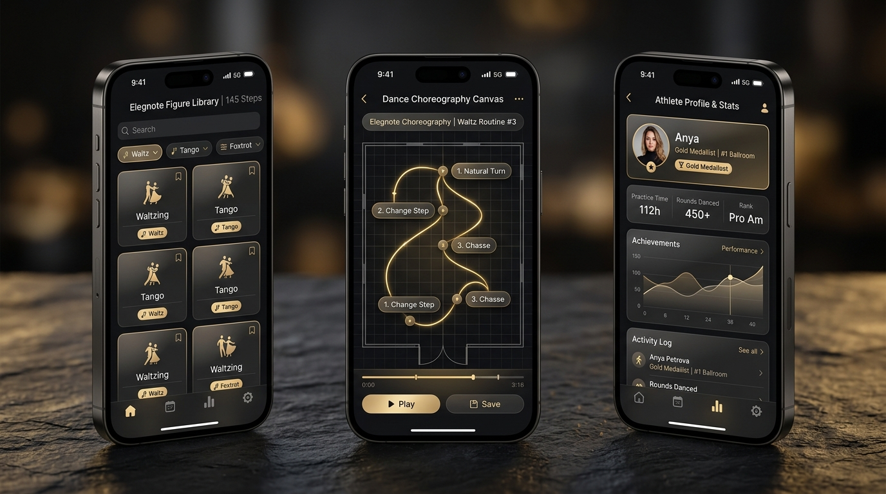
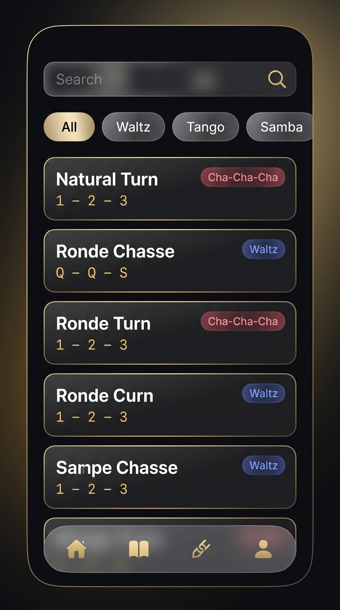
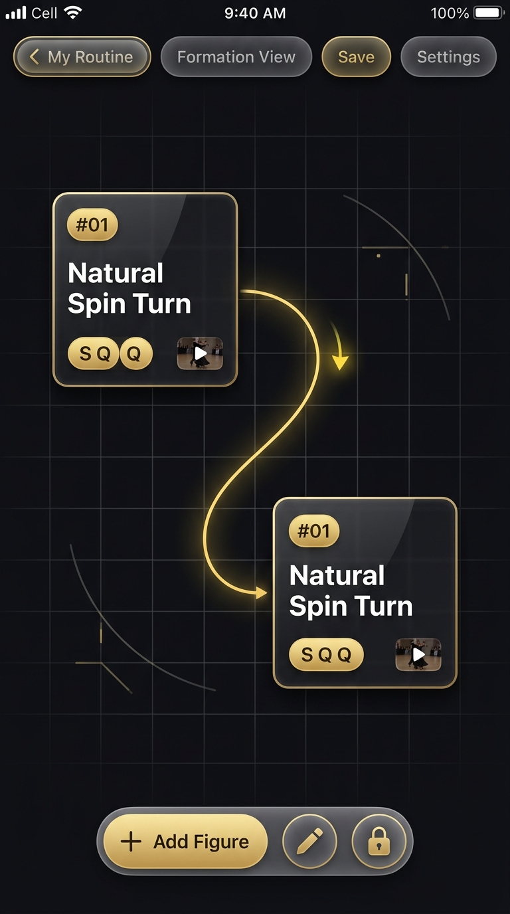
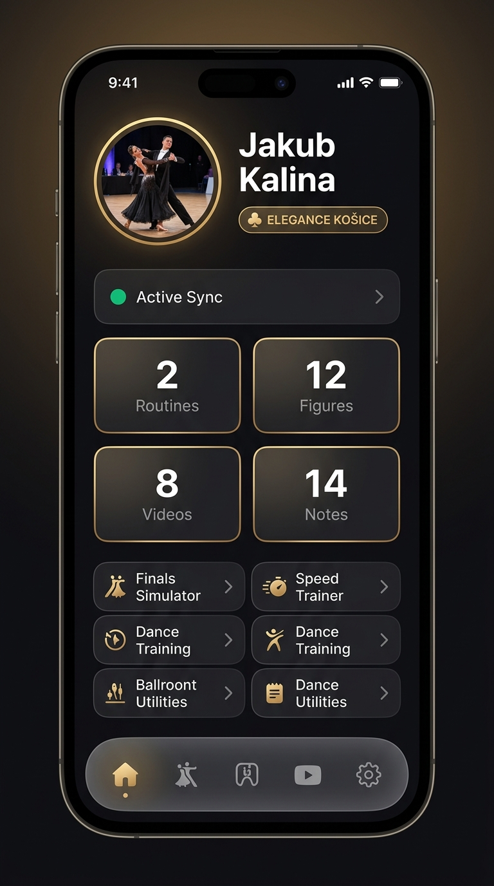

Vygeneroval som 4 nové vysokokvalitné UI náhľady podľa moderných Apple UI/UX princípov, kde čierna nie je prázdna tma, ale vrstvený teplý dymový obsidián s jemnými zlatými hranami, vysokým kontrastom a okamžitou orientáciou pre tanečníka.

Presne tie obrazovky, ktoré si fotil na mobile, prerobené na prehľadné, prémiové a čitateľné rozhranie:

Žiadny jednoliaty čierny pás. Karty figúr sú samostatné vyvýšené bloky z dymového skla s 1px zlatým lemom. Názvy sú žiarivé biele a disciplíny majú jemné sklenené kapsule.

Tmavá plocha má jemnú tanečnú sieť a vodiace línie sály. Uzly figúr majú zlatý štítok s poradím (#01), rytmus a náhľad videa, prepojené žiariacou zlatou krivkou trajektórie.

Profilová fotka so zlatým prstencom a odznakom klubu ELEGANCE KOŠICE. Štatistiky sú v mriežke 2x2 s veľkými bielymi číslami a tréningové nástroje majú rýchle prepínače.
Prečo tieto nové návrhy pôsobia prémiovo a prívetivo namiesto „prázdnej čiernej diery“:
Pozadie nie je tvrdá čierna, ale hlboký teplý obsidián (#0E0E12) s mäkkým zlatým svetlom na okrajoch.
Každá karta má 1px tenký gradientný lem (od zlata po priesvitné sklo), ktorý dáva prvkom fyzickú hĺbku a jasné hranice.
Všetky hlavné názvy sú v čistej žiarivej bielej (#FFFFFF), zatiaľ čo zlato slúži ako akcent pre dôležité akcie a dáta.
Namiesto krikľavých farieb majú označenia tancov (Latina/Štandard) 15% priehľadnosť s jemným farebným tónom.